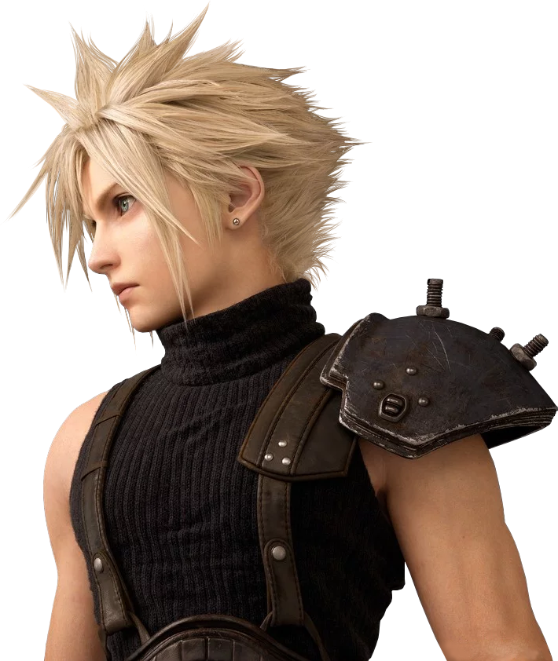
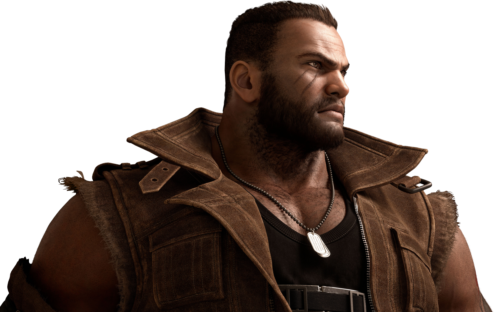

Cloud Strife, exmiembro de Soldado, se adentra en la ciudad del mako, Midgar.
El mundo del clásico juego FINAL FANTASY VII renace con gráficos de última generación y un nuevo sistema de combates.
Tráiler oficial
PERSONAJES JUGABLES
-
CLOUD STRIFE
Ex-Soldado de 1.ª clase. Tras dejar su puesto militar con Shinra, se establece como mercenario en Midgar y presta sus servicios a Avalancha por recomendación de Tifa, su amiga de la infancia. Armado con su espada mortal, está dispuesto a aceptar cualquier encargo si la paga es buena. De hecho, esa es su motivación para ayudar a Avalancha; no lo hace por salvar el planeta. Tendría que haber sido solo un encargo más...
-
TIFA LOCKHART

Miembro del grupo anti-Shinra Avalancha y propietaria de un bar llamado El Séptimo Cielo, en la barriada del sector 7. A pesar de albergar un odio muy profundo hacia la compañía Shinra, no participa en la misión de destruir el reactor de mako n.º 1. Tiene dudas acerca de los métodos de Avalancha, algo que confiesa a su amigo de la infancia, Cloud, al reencontrarse con él.
-
BARRET WALLACE
Líder del grupo anti-Shinra Avalancha. Fue expulsado de la célula principal de Avalancha por sus tendencias extremistas. Desde entonces, opera en Midgar de forma independiente con un grupo reducido. Protege a los habitantes de la barriada del sector 7 como integrante de la policía vecinal y, sobre todo, se preocupa por ser un buen padre para su hija, Marlene.
-
AERITH GAINSBOROUGH

Florista de la barriada del sector 5. Se topa con Cloud la noche del atentado contra el reactor de mako n.º 1. Tiene la habilidad única de oír la voz del planeta, motivo por el cual ha estado bajo la vigilancia de Shinra desde que era una niña. Acude a menudo a la iglesia del sector 5 para regar las flores.